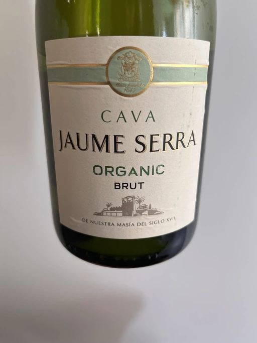

- Type
- White Sparkling, Brut
- Producer
- Jaume Serra
- Vintage
- NV
- Location
- Spain, Cava
- Grapes
- Macabeo
- Alcohol
- 11.5
- Sugar
- NA
- Price
- 285 UAH
- Cellar
- N/A
Ratings
2022-06-20 - 7.00
Jaume Serra is Jaume Serra no matter if they put the word ‘Organic’ on their label or use one grape exclusively. It’s always a good and reliable basic Cava. Typical notes, typical palate. Good for it’s price. And also I must note that 11.5 abv is an appealing feat.